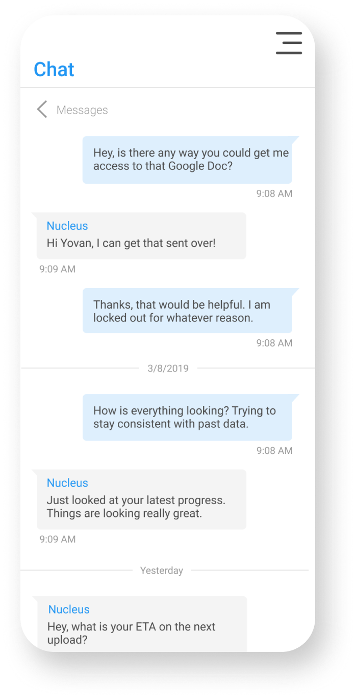
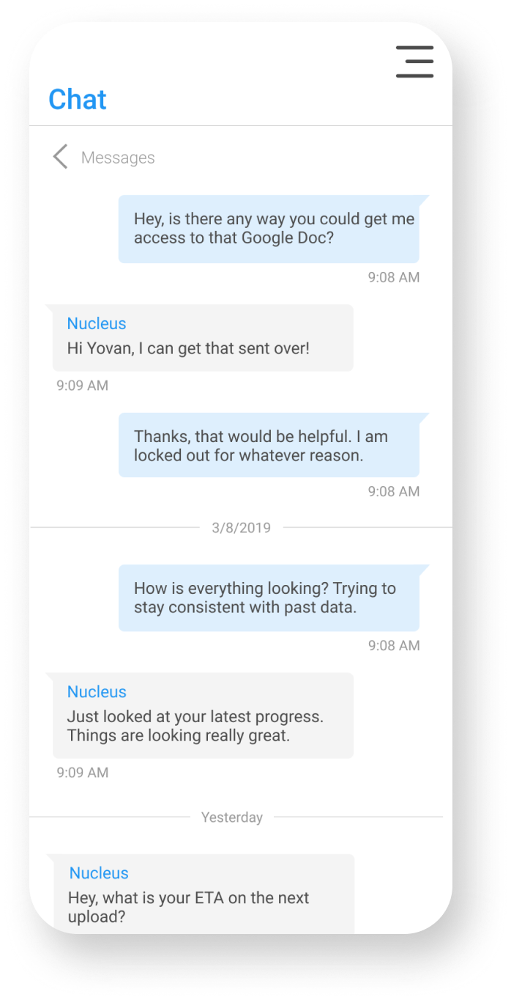

Solve Employment Re-Design
Role: Competetive Research, UI Design, User Interviews, Final Stakeholder Presentation
Team: Kerry McPhearson, Ruth Philips, Zeke Kooyer

 

Overview
Solve Education is a non-profit with a socially responsible freelancing platform that helps those in Southeast Asia find employment. Working on a team of seven UX designers, three of us re-designed the talent side of Solve Employment’s hiring platform. The other four made changes to the hirer and admin side of the non-profit’s system. Stakeholder interviews, competitive research, rapid ideation, low-fidelity wireframes, high-fidelity design, user testing and multiple design interations were all completed in our two weeks working on the project.
Problems determined by stakeholders
Our stakeholder interviews were conducted with the head developer, head UX design and CEO of Solve Education (the parent organization of Solve Employment). The main complaints users had with the platform was that it was difficult to navigate, as well as understand how many jobs had been applied for or were active.
Research
First, our group research Solve Employment’s user base, which is based
in Indonesia. For context, under 20% of people in Indonesia have bank
accounts and roughly one third of the nation lives below the poverty
line. Users on the platform are looking for short-time jobs that can
be applied for on their cell phone.
Second, we did
competitive analysis on popular “gig economy” websites such as Fiverr.

User Persona

Mental Model

User Flow
Wireframing
Taking screenshots of the existing website, I used the Crazy-8s method to ideate different versions of each flow. From there our team picked which versions to pursue through dot voting. These were built as low-fidelity designs.


High-Fidelity Design
As a team of 7, we created a design system in order to have consitency
in color, typography text sizing, shadows, compontents (buttons,
cards, navigation bar, etc.) and sizing. Using an eighth pixel grid
and the same system was instrumental in have the talent, hirer and
admin sides maintaining a similar feeling.
The inital design of the website had a table interface. Not only did
the UI appear outdated, it did not create an enjoyable experience. Our
design was meant to remedy this. Now if the user chooses to dig deeper
into their status, they are presented with the option of clicking the
content they wish to investigate and will be directed to their desired
screen with expanded information on their desired subject.


To solve one of our initial problems, our design included a status section at the top of each dashboard to illuminate information such as active jobs or applications. The user is now able to view the progress of their active jobs, applications, and disputes as they are submitted, without having to hunt for the information.
User-Testing and Interative Design
After ordering and reviewing three test on Usertesting.com, as well as
three user interviews, our team realized there were two major pain
points we had to resolve.
1. The “Status” section felt too small and the background was too
light. Talent team updated the background color and resized numbers to
match the font around it.
2. Current jobs page did not have the ability to check progress or
terminate a job in an intuitive way. Talent team added the ability on
“Current jobs” to click on the hirer name to visit their company
profile and the ability to click the job name to bring it to the page
that allows progress updates and termination.